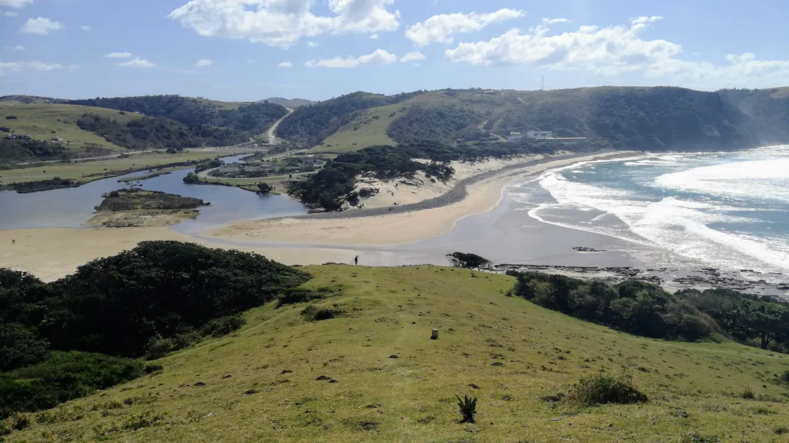

Travel · South Africa
Cows on the Beach & Hills of Green: Discovering the Magic of the Transkei

Forget highways, forget resort towns, forget everything you expect from a coastal holiday. Now, imagine a place where the roads dissolve into dirt tracks, where rolling green hills are dotted with colourful huts like scattered jewels, and where the only traffic jam on the beach is a herd of lazily grazing cows.
Welcome to the Wild Coast, the former Transkei. This isn't just a destination; it's a journey to the very soul of South Africa. It's rugged, it's raw, it's breathtakingly beautiful, and it promises an adventure you will never, ever forget.
A Land That Time Didn't Forget, But Bypassed
To understand the Transkei's unique magic, you have to look at its past. During the apartheid era, this region was designated as a "Bantustan" or homeland, a supposedly independent state for the Xhosa people. This political isolation, a deeply flawed policy, had an unintended side effect: it shielded the area from large-scale commercial development. The highways, shopping malls, and hotel chains that sprung up elsewhere never reached these hills.
When apartheid ended, the Transkei was reincorporated into South Africa as part of the vast Eastern Cape province. But its spirit remained distinct. It is a land that has held onto its traditions, its language, and its ancient rhythms. It is, after all, the proud ancestral home of the Xhosa people and the birthplace of Nelson Mandela himself—a landscape steeped in resilience and history.
Coffee Bay: Your Bohemian Gateway ☕
Your adventure will likely start in Coffee Bay, a vibrant, rustic hub nestled in a river valley. Don't let the name fool you; coffee isn't the main attraction. This is the bohemian heart of the Wild Coast, a melting pot for backpackers, surfers, hikers, and wanderers from all over the world.
The vibe is pure, laid-back freedom. Days are for surfing the bay's gentle waves, hiking the cliff paths, or learning about Xhosa culture from a local guide. Nights are for sharing stories with new friends around a bonfire under a brilliant canopy of stars. It's the perfect, lively entry point to the Wild Coast's slower pace of life.
The Legend of the Hole in the Wall 🌊
The most iconic landmark on the entire Wild Coast is just a stunning 9km hike south of Coffee Bay. Hole in the Wall is a breathtaking natural spectacle: a massive, free-standing cliff that stands in the ocean, with a huge, perfectly carved archway right through its centre.
Its Xhosa name is izi Khaleni, which means "place of sound," as the waves crash through the hole with a thunderous roar during high tide. But it's the local legend that truly captures the imagination. It's said that a beautiful girl from a coastal village fell in love with one of the mythical "sea people." To reach her, her lover and his people rammed a giant fish into the cliff, creating the hole so they could be together. Hiking here and hearing that story as the waves crash around you is a truly mystical experience.
Mdumbi: Paradise Found 🌿
If Coffee Bay is the lively gateway, Mdumbi is the serene inner sanctum. A little further north and even more remote, Mdumbi is a slice of untouched paradise. It's a place defined by a pristine river estuary, a sweeping white-sand beach, and some of the best surf breaks in the country.
What makes Mdumbi special is its deep connection to the local community. The backpacker lodges here are often co-owned and run by the local Xhosa people, promoting a sustainable and authentic form of tourism. This is the place to come if you want to completely disconnect, find peace, and experience the true warmth and hospitality of the Wild Coast.
A trip to the Transkei is an adventure in every sense. The roads will give you a "Transkei massage" (read: they're bumpy), your phone will likely have no signal, and plans will happily give way to the slow rhythm of the tides. But in return, you'll be rewarded with a sense of freedom that is increasingly rare in this world.
This is not a place you simply see; it's a place you feel deep in your bones. It's a journey for the curious, the brave, and the wild at heart. Are you ready to answer the call?